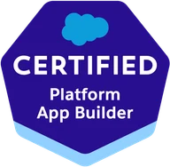
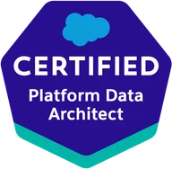
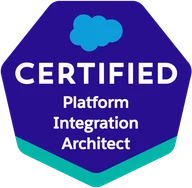
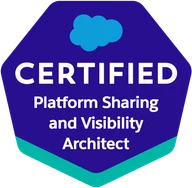
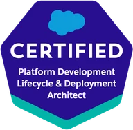
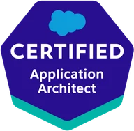

We build your ideas
We specialize in development for the Salesforce platform.
What we do
TrailTeam specializes in delivering high-end engineering solutions for the Salesforce ecosystem. From complex integrations to custom Lightning components, we build robust projects designed to scale your business and optimize your CRM experience.
-
Lightning Web Components
Custom interfaces on Salesforce's modern front-end framework — reusable, fast, and consistent with the rest of your org.
-
Apex and platform logic
Triggers, batch jobs and asynchronous processing written to scale, with governor limits designed for rather than discovered in production.
-
Testing and QA
Apex test classes that assert real behaviour instead of padding coverage numbers, plus regression and integration runs before anything reaches production.
-
Sales Cloud
Pipeline, forecasting and automation shaped around how your team actually sells, not around a default configuration.
-
Service Cloud
Case management, omni-channel routing and knowledge bases that shorten resolution times instead of adding clicks.
-
Commerce Cloud
Storefronts, catalogues and checkout flows that share data with the rest of your Salesforce org rather than running beside it.
-
Integrations
REST and SOAP APIs, middleware and event-driven flows connecting Salesforce to your ERP, billing and everything else in the stack.
-
Data architecture and migration
Object models that still hold up as volumes grow, and migrations off legacy CRMs or spreadsheets with the mapping, deduplication and validation done before go-live.
-
Deployment and release management
Source-driven development, scratch orgs and CI pipelines, so shipping to production becomes a routine step rather than an event everyone dreads.
-
Administration and configuration
The day-to-day org work: users and permission sets, flows and validation rules, reports and dashboards, and the data hygiene that keeps all of it trustworthy.
How we work
Four steps, no surprises in between.
-
Discovery call
We talk through your goals, your current org and the constraints around it. No commitment and no charge — and if we are not the right fit, we will say so.
-
Scope and estimate
You get a written proposal: what we will build, in what order, how long it takes and what it costs. Fixed price or time and materials, whichever suits the work.
-
Build the way you work
We slot into whatever you already run — sprints, a Kanban board or your own hybrid — using your tracker and your definition of done. If nothing is in place yet, two-week iterations are a sensible default. Either way you get working software in a sandbox you can click through.
-
Release and support
We deploy to production, hand over documentation, and stay available for the changes that follow — because there are always changes that follow.
Salesforce certifications
Credentials held across the team.
- JavaScript Developer

Platform App Builder- Platform Developer
- Platform Developer II

Platform Data Architect
Platform Integration Architect
Platform Sharing and Visibility Architect
Platform Development Lifecycle and Deployment Architect
Application Architect
Meet the innovators
A dedicated team, modern technology.
Large integrators sell you a brand, then staff the project with whoever is free that quarter. You meet the senior architect once, during the pitch, and spend the rest of the engagement talking to a project manager who carries your questions to people you never meet.
A small team works the other way round. The engineers who scope your project are the ones who build it, so answers come back the same day instead of travelling down a chain. When priorities shift mid-sprint, we adjust — there is no change-request process to survive first.
Everyone here is Salesforce certified and senior, so nobody is learning the platform on your budget. And because we take on a limited number of projects at a time, yours is never the one that quietly slips.
Let's talk about your project
Tell us what you are building on Salesforce and we will get back to you. The first call is free, and you will get a straight answer on whether we are the right team for the job.
contactus@trailteam.dev